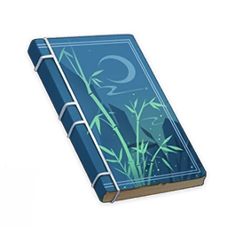

Liyue · Books & Literature
Moonlit Bamboo Forest
This four-volume Liyue story follows a boy and a white-clad woman in Mt. Qingce’s bamboo forest, where a tale of the Three Moons is told as remembered legend.

A four-volume Liyue story
Moonlit Bamboo Forest follows a boy who wanders into the bamboo woods of Mt. Qingce and meets a mysterious woman garbed in white. Across four volumes, he hears village fables, walks with the woman, and listens as she tells stories of a much older past.
The book is a literary narrative. Its own framing repeatedly treats the stories as fables, forgotten legends, fragments, and dreams rather than presenting the woman as a verified historian.
From village fables to the woman in white
The first volumes build from stories told by the village elder: fox wedding processions, dangerous spirits, and accounts of the Geo Archon. As the boy follows Seelie trails through the forest, he meets the white-clad woman, whose golden eyes and knowledge distinguish her from the familiar village tales.
The book leaves the woman unnamed. The story’s final volume implies a long distance between her fate and the boy’s, but it does not give her a biography or a formal identity.
The Three Moons and the morning stars
In Volume III, the woman says three sister moons once crossed the sky in a silver carriage and shared love for the stars of daybreak. A great calamity overturned their carriage; the sisters turned against one another and died, leaving one pale corpse to shed light. She links wolf packs to the moons and their grief.
The woman immediately places this account among stories and broken memories passed down as legends. The novel gives an important version of the Three Moons motif, but the account remains embedded in a story told to a boy in the forest.
The parting and the boy’s future
The boy falls asleep after hearing the account and dreams of three moons and a silver carriage at the gates of the stars. At dawn, the woman leads him out of the forest. Much later, he understands that he would leave for Liyue Harbor and return to his village when old, while she remained to protect ancient tales.
The story closes with their separation and a whinnying cry. It does not identify the woman or confirm that the boy’s remembered dream was a literal encounter with the ancient history she described.
Reading it beside later lunar evidence
Later Nod-Krai quest records and Moongazer’s Engraving add evidence about lunar civilizations and messages. They make the book’s motif worth comparing with the wider archive, but do not turn every line of the woman’s tale into a corroborated event.
Keep the novel’s remembered legend, the boy’s dream, and the later quest documents distinct. Their overlap is meaningful, while the book itself leaves the woman’s identity and the exact source of her knowledge unstated.
This is an original CoreGG reading guide, not an official HoYoverse article or a reproduction of the game text. Source links below identify the records used so you can check the original context.
Sources & references
Check these sources for the original game text and reference trail.